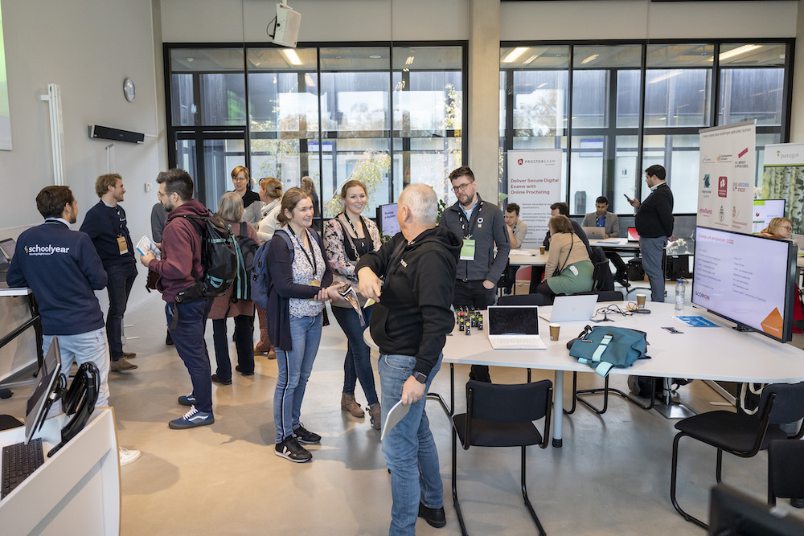
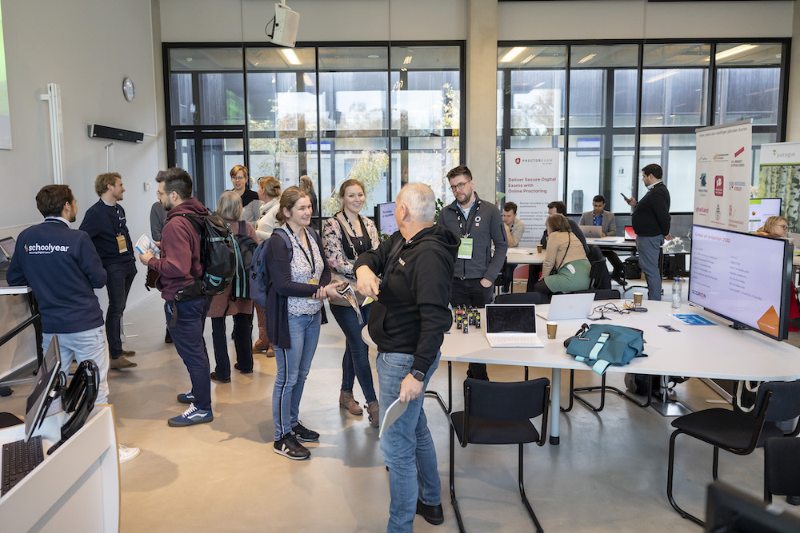

Toets2daagse
KEYNOTES:

prof. dr. Lambert Schuwirth

dr. Cor Sluijter
dr. Kelly Beekman

Sessies dag 1
Het overzicht van alle sessies van dag 1 is hier te vinden.

Sessies dag 2
Het overzicht van alle sessies van dag 1 is hier te vinden.
Toets2daagse
KEYNOTES:
Het overzicht van alle sessies van dag 1 is hier te vinden.

Het overzicht van alle sessies van dag 1 is hier te vinden.